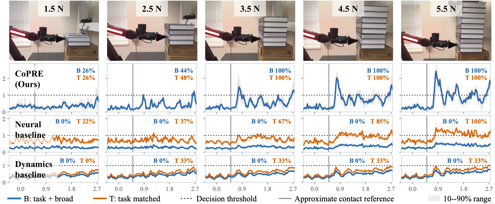
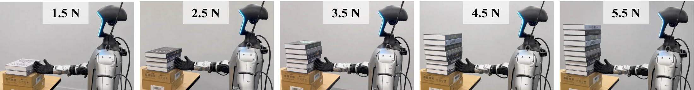
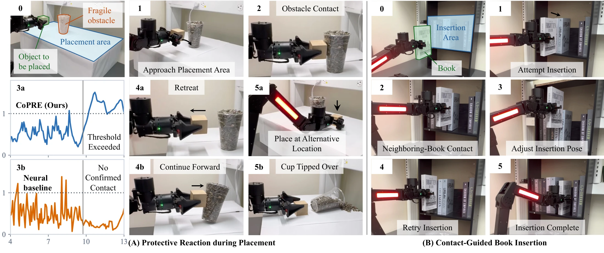

Protective retreat during placement
When a cup blocks placement of a carried block, detected contact triggers a stop and retreat. The robot places the block at an alternate location, leaving the cup upright.
Weak contact induces changes in joint torque estimates that can be difficult to distinguish from variability due to friction, robot motion, and measurement noise. Contact-free Proprioceptive Response Estimation (CoPRE) predicts nominal joint torque from proprioceptive histories and joint commands, and detects contact through deviations between observed and predicted torque estimates. Proprioceptive observations comprise joint positions, velocities, and motor-derived torque estimates.
CoPRE combines state exclusion within the prediction interval with noise-weighted Jacobian aggregation of torque residuals. Training and threshold calibration use only contact-free recordings, without additional force sensors or contact or force labels. We evaluate contact detection on ARX L5 and the Unitree G1 right arm, and demonstrate contact-guided protective retreat and insertion retries on ARX.
State exclusion limits contact-induced changes to the nominal reference; noise-weighted Jacobian aggregation accounts for contact-free residual variability.
Train the nominal-response predictor on contact-free proprioceptive observations and joint commands. Calibrate the detection threshold using separate contact-free recordings.
Predict nominal joint torque from state–command history preceding the prediction interval and known commands within it. Exclude state observations within this interval to limit the influence of recent contact-induced state changes on the nominal reference.
Correct the nominal bias in observed-minus-predicted torque residuals, then aggregate them using the end-effector Jacobian with lower weights for joints with greater contact-free residual variability. Confirm contact when the score meets or exceeds the calibrated threshold for three consecutive samples.

We evaluate CoPRE on ARX L5 and the Unitree G1 right arm using 90 physical contact trials. Each platform is tested at five reference sliding-resistance levels and three pushing speeds, with three repetitions per condition (45 trials per platform).
| Platform | Method | Recall ↑ | F90 (N) ↓ | FA time ↓ |
|---|---|---|---|---|
| ARX L5 | CoPRE | 74.1 | 3.5 | 3.32 |
| ARX L5 | NEXT-based neural predictor | 0.0 | >5.5 | 14.51 |
| ARX L5 | Nominal inverse-dynamics detector | 0.0 | >5.5 | 0.00 |
| G1 right arm | CoPRE | 82.2 | 5.5 | 0.86 |
| G1 right arm | NEXT-based neural predictor | 16.3 | >5.5 | 1.51 |
| G1 right arm | Nominal inverse-dynamics detector | 42.2 | >5.5 | 0.36 |
CoPRE recall: ARX 74.1% (95% CI: 62.2–85.2%); G1 82.2% (95% CI: 72.6–91.1%). FA time is the fraction of held-out broad contact-free motion spent in confirmed alarm. F90 is the lowest tested reference sliding resistance with ≥90% recall at that and all higher tested levels; >5.5 indicates that the criterion is unmet.
Combined calibration; shared comparison rules within each robot. ARX evaluates detection through push end; G1 uses a 0.5 s window. Reference resistance is measured separately at sliding onset; the 90% criterion must hold at that and all higher tested levels.
ARX selects the lowest threshold with zero confirmed calibration alarms. G1 permits at most 1% alarm time in each calibration motion set and uses three-fold cross-fitting. Training and calibration are separate for each robot.
Learned-model recall averages three seeds; dynamics is evaluated once. The 95% confidence intervals bootstrap physical trials, grouping seed evaluations. The evaluation window begins at a geometric contact reference, not independently measured contact onset.
The broad-motion false-alarm time fraction is the fraction of held-out broad contact-free motion spent in confirmed alarm. Reference resistance characterizes the pushing condition, not force at detection. CoPRE’s score is used for contact detection, not validated force measurement.


| Method | 1.5 N | 2.5 N | 3.5 N | 4.5 N | 5.5 N |
|---|---|---|---|---|---|
| CoPRE | 55.6% | 85.2% | 85.2% | 85.2% | 100.0% |
| NEXT-based neural predictor | 0.0% | 18.5% | 0.0% | 25.9% | 37.0% |
| Nominal inverse-dynamics detector | 22.2% | 22.2% | 55.6% | 44.4% | 66.7% |
Qualitative ARX demonstrations connect contact detection to protective retreat and belief-guided retries.
When a cup blocks placement of a carried block, detected contact triggers a stop and retreat. The robot places the block at an alternate location, leaving the cup upright.
Contact with a neighboring book blocks the first attempt. Contact feedback updates a spatial belief map and guides pose adjustments and retries until the book enters the gap.

Extended recordings at original speed · silent
The continuous placement sequence shows approach, retreat, and placement at an alternate location.
Selected recordings illustrate the experiments and individual manipulation outcomes. Quantitative comparisons are reported in the results above.
Matched ablations examine prediction, residual scoring, and temporal design on the same benchmark recordings.
State exclusion improves recall on both platforms. Noise-weighted Jacobian aggregation improves recall relative to unweighted aggregation, with increased false-alarm time. The comparisons below also examine prediction horizons, predictor families, temporal filtering, and detection windows.
Recall and the held-out broad-motion false-alarm time fraction are reported together, in percent, to show the sensitivity–false-alarm trade-off. FA time denotes the fraction of contact-free motion spent in confirmed alarm.
| Variant | ARX recall ↑ | ARX FA time ↓ | G1 recall ↑ | G1 FA time ↓ |
|---|---|---|---|---|
| Off | 3.7 | 0.42 | 64.4 | 0.84 |
| On (default) | 74.1 | 3.32 | 82.2 | 0.86 |
| Variant | ARX recall ↑ | ARX FA time ↓ | G1 recall ↑ | G1 FA time ↓ |
|---|---|---|---|---|
| Standardized norm | 0.0 | 11.79 | 31.9 | 1.02 |
| Unweighted Jacobian | 45.9 | 1.67 | 12.6 | 0.38 |
| Weighted Jacobian (default) | 74.1 | 3.32 | 82.2 | 0.86 |
| Variant | ARX recall ↑ | ARX FA time ↓ | G1 recall ↑ | G1 FA time ↓ |
|---|---|---|---|---|
| H = 1 | 4.4 | 0.22 | 70.4 | 0.88 |
| H = 2 | 46.7 | 1.26 | 71.1 | 0.94 |
| H = 3 (default) | 74.1 | 3.32 | 82.2 | 0.86 |
| H = 4 | 74.1 | 4.55 | 83.7 | 1.23 |
| H = 5 | 80.0 | 7.92 | 81.5 | 0.95 |
| Variant | ARX recall ↑ | ARX FA time ↓ | G1 recall ↑ | G1 FA time ↓ |
|---|---|---|---|---|
| Persistence | 0.0 | 0.02 | 24.4 | 0.59 |
| Ridge | 31.1 | 0.23 | 48.9 | 0.91 |
| MLP | 77.8 | 14.18 | 81.5 | 0.84 |
| GRU | 57.0 | 0.72 | 92.6 | 0.45 |
| Transformer (default) | 74.1 | 3.32 | 82.2 | 0.86 |
The Transformer architecture is used on both platforms, with separate training for each robot. GRU achieves higher recall and lower broad-motion alarm time on G1.
| Variant | ARX recall ↑ | ARX FA time ↓ | G1 recall ↑ | G1 FA time ↓ |
|---|---|---|---|---|
| Direct / instantaneous (default) | 74.1 | 3.32 | 82.2 | 0.86 |
| Autoregressive | 69.6 | 6.30 | 65.9 | 0.81 |
| Fast transient | 40.0 | 1.00 | 54.8 | 0.99 |
| Slow sustained | 80.0 | 26.19 | 50.4 | 0.56 |
| H | Off: recall ↑ | Off: alarm time ↓ | On: recall ↑ | On: alarm time ↓ |
|---|---|---|---|---|
| 2 | 68.9 | 0.85 | 71.1 | 0.94 |
| 3 | 64.4 | 0.84 | 82.2 | 0.86 |
| 4 | 63.0 | 0.81 | 83.7 | 1.23 |
| Window (s) | Off: recall ↑ | On: recall ↑ |
|---|---|---|
| 0.1 | 13.3 | 20.7 |
| 0.25 | 38.5 | 57.0 |
| 0.5 | 64.4 | 82.2 |
Predictors and thresholds are fixed across these evaluation windows. The main G1 benchmark uses 0.50 s.
The detection archive contains 45 contact and 42 contact-free ARX recordings, and 45 contact and 51 contact-free G1 recordings. Seeds, cross-fitting, and ablations reuse these recordings. Downloads contain summary tables and a contact-trial index.
Main results CSV ↓Ablation tables CSV ↓G1 temporal checks CSV ↓90-trial index CSV ↓Data notes ↗
Video and evaluation summaries are available below.
{kind=link}